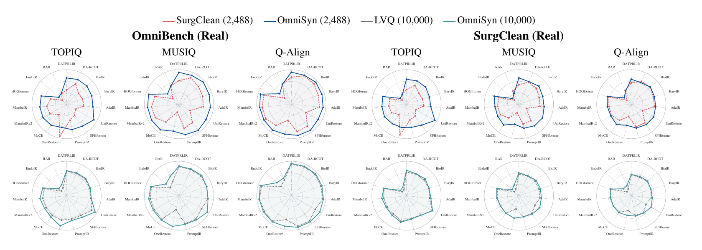
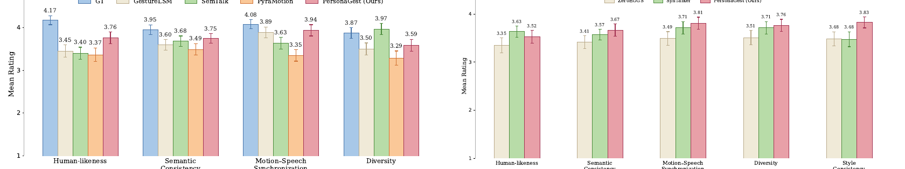

E1
Training dataset comparison
OmniSyn transfers better under matched budgets
Against pseudo-paired SurgClean at 2,488 pairs, OmniSyn wins 126 of 135 real-world NR-IQA comparisons. Against exactly paired LVQ at 10,000 pairs, OmniSyn wins all 135 comparisons. Exact correspondence matters, but surgical-specific synthesis remains essential beyond exact pairing.

